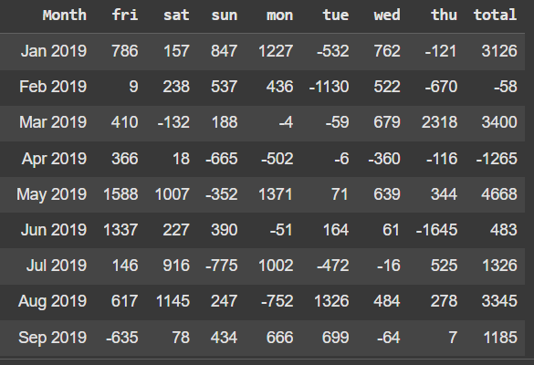

Market Segment Booking Pace - Summary Analysis
Months View Starting Realized vs Last Year
Since we are suing Historica dataset
WE should simulate what On the Books looked like from a specific date in the past (e.g., 2019-06-01) rather than using CURRENT_DATE.
Suggested Approach FOR RESORTS
Instead of tracking daily or strictly weekly changes (which can be noisy or misleading for resorts), here's the ideal structure for resorts:
ü߆ Why Booking Pace Matters (for Resorts)
-
It answers questions like:
- Are we ahead or behind compared to last year?
- Are guests delaying bookings this year?
- Do I need to adjust pricing, promos, or stop-sells? For resorts:
- Long lead times (30–90+ days) → pace helps forecast peak/shoulder fill
- Sudden slowdowns in pace may signal a market shift or pricing issue.
- -Helps identify shifts in booking behavior.
- Reveals if you're too reliant on a specific channel (e.g., OTAs).
- Informs sales and marketing strategy (e.g., push more Direct if it’s shrinking).
- Crucial for pricing and forecasting, especially if high-ADR segments are losing share.
*Monthly Bases display Current Year VS Last Year Forecast*
Tracks Monthly Booking Trends: Helps visualize how many more or fewer rooms are booked now compared to the same week last year, per day. Spot Underperformance: Highlights weak weekdays (e.g., if Fridays are consistently underbooked YoY). Supports Forecast Accuracy: Used to validate or adjust forecasts based on pacing vs. last year. Enables Actionable Insight: Sales/marketing can push promotions on underperforming days or weeks. Monitors Growth or Decline: Helps assess the effectiveness of revenue management strategies over time.
"On The Book" Mix To Last Year
Current Mix To Last Year Forecast - LY Actual
Charts - "On The Book" Mix


Charts - Current Mix vs LY Forecast


OTB Variance & Pickup Analysis
How much your confirmed bookings (with buffer) are ahead or behind the gap between LY forecast and actuals. It factors in how overestimated or underestimated LY forecasts were — giving a more refined measure than a straight CY - LY comparison
What “OTB Variance to 1 Period Ago” should mean:
• Compare Confirmed bookings (OTB) for 2020 to Confirmed bookings for the same period last year (2019) — either: o Same calendar day (e.g., Jan 15, 2020 vs Jan 15, 2019), or o Same lead time (e.g., 30 days before arrival in 2020 vs 30 days before arrival in 2019 — more complex).
"On The Book" Variance To 1 Period Ago

Pickup Variance To 1 Period Ago

Charts - OTB Variance


Charts - Pickup Variance


Month-over-Month (MoM) On-The-Books (OTB) Room Nights
How much your confirmed bookings (with buffer) are ahead or behind the gap between last year's forecast and actuals. It factors in how overestimated or underestimated last year’s forecasts were — giving a more refined measure than a straight CY - LY comparison.
What the Query Does (Step by Step):
- Filters only
forecast_type = 'OTB'(i.e., On-The-Books = bookings made before arrival). - Only for 2019 VS 2020.
- Includes specific distribution channels: OTA, Direct, TA/TO, Website, Group, Corporate.
- Extracts fields like
arrival_date,month,year, andmonth_startfor grouping. - Retains
room_soldanddistribution_channel.
Calculates:
- OTB Variance = current OTB - previous OTB
- MoM % Change = (Variance / previous OTB) × 100
- Formats
month_startinto a readable label like "Jan 2019"
✅ Final Output: A month-by-month report showing:
- Month
- Current OTB
- Last Month OTB
- OTB Variance
- MoM % Change
üìä Why This Is Important for a Revenue Manager:
- Tracks Booking Momentum: Shows whether the current month booking volume is up or down vs. the previous month. Helps assess performance trends and booking pace.
- Channel Contribution Focus: Focuses on specific distribution channels (OTA, Direct, etc.) for mix analysis and to prioritize high-performing sources.
- Revenue Forecasting Insight: OTB room nights are a leading indicator of future revenue. Declining MoM bookings may indicate weak demand, prompting pricing or promotional adjustments.
- Supports Seasonality & Strategy: Can incorporate seasonal logic (currently commented out in the query) for better planning during peak or low periods.
- Data-Driven Decisions: The MoM % change helps quantify trends to guide:
- Marketing spend decisions
- Revenue optimization
- Targeted sales initiatives
ü߆ Summary
This is a MoM On-The-Books booking trend analysis by distribution channel. It helps revenue managers identify shifts in booking patterns, adjust strategies, and optimize revenue opportunities in real time.
"On The Book" Variance To 1 Period Ago

Pickup Variance To 1 Period Ago
Charts - OTB Variance
Charts - Pickup Variance
Segment Overview
OTB Mix %

Segment ADR

Segment ADR Change From Last Week